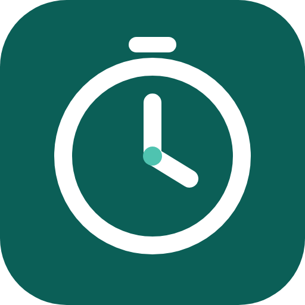

Foco Semanal
Tus metas, temporadas y bloques de tiempo en una app para Windows. Tus datos se sincronizan con tu cuenta, así que ves lo mismo en todos tus dispositivos.
Cómo instalarla
- Descargá el archivo Foco-Semanal-Setup.exe.
- Abrilo. Si Windows muestra "Windows protegió tu PC", tocá Más información y después Ejecutar de todas formas. Pasa porque la app no tiene firma paga.
- Se instala sola, crea el acceso directo en el escritorio y se abre.
- Entrá con tu email y contraseña. La próxima vez ya queda abierta.
Las actualizaciones se descargan solas al abrir la app, cuando hay una versión nueva.